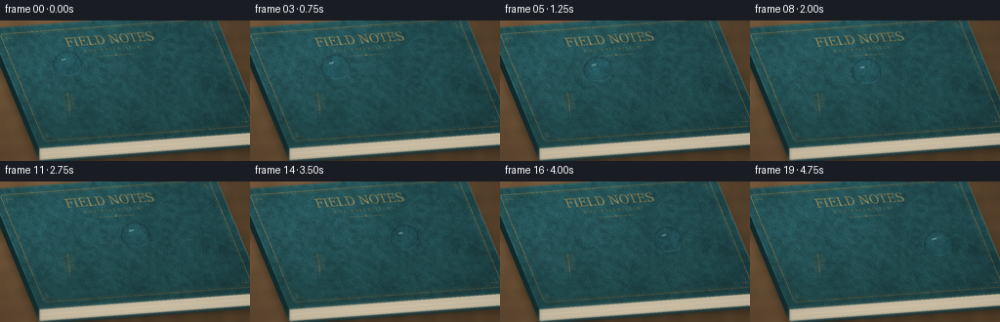
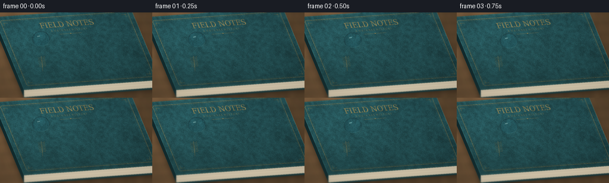
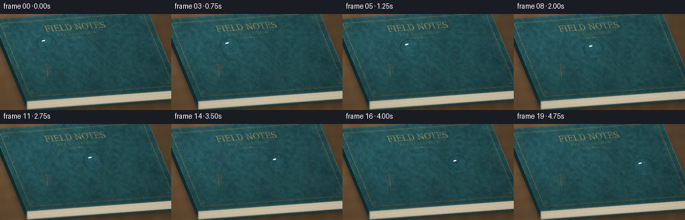
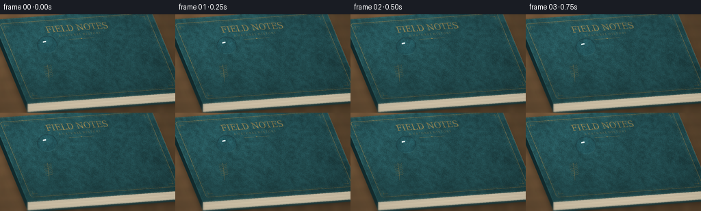

CODING AGENTS AS PIXEL WORLD MODELS
traex/GPT-6.1-Sol · phygen_040
点击播放 · 原生 RGB 像素
逐轮保存的候选
回放视频、检查图与代码变化。
每份候选均可单独播放。实际图片检查记录在下方工具轨迹中。
候选 01播放与检查图
点击播放 · 原生 RGB 像素


展开代码变化
--- 上一保存版本
+++ 本次保存版本
@@ -0,0 +1,267 @@
+"""Procedural, supersampled macro video of water moving on a clothbound book.
+All texture, geometry and light are synthesized here; no external images are used.
+"""
+from pathlib import Path
+import json
+import numpy as np
+from PIL import Image, ImageDraw, ImageFont, ImageFilter
+import artifact_io
+
+ROOT = Path(__file__).resolve().parent
+SPEC = json.loads((ROOT / 'task_spec.json').read_text())
+W, H, SS = SPEC['width'], SPEC['height'], 3
+SW, SH = W*SS, H*SS
+rng = np.random.default_rng(40)
+
+def noise(w, h, outw, outh):
+ a = rng.uniform(0, 255, (h,w)).astype(np.uint8)
+ return np.asarray(Image.fromarray(a).resize((outw,outh), Image.Resampling.BICUBIC),dtype=float)/255-.5
+
+def sample(im, x, y):
+ h,w = im.shape[:2]
+ x=np.clip(x,0,w-1.001); y=np.clip(y,0,h-1.001)
+ ix=x.astype(int); iy=y.astype(int)
+ fx=(x-ix)[...,None]; fy=(y-iy)[...,None]
+ return (im[iy,ix]*(1-fx)*(1-fy)+im[iy,ix+1]*fx*(1-fy)+im[iy+1,ix]*(1-fx)*fy+im[iy+1,ix+1]*fx*fy)
+
+# A genuinely textured cover atlas: small irregular pebbles and woven threads.
+TW,TH=1200,660
+ty,tx=np.mgrid[:TH,:TW]
+nfine=noise(TW,TH,TW,TH)
+nmedium=noise(280,160,TW,TH)
+nlarge=noise(55,31,TW,TH)
+ntone=noise(10,6,TW,TH)
+# Cell interiors give leather grain; fine fibres catch the raking light.
+cell=6.5
+best=np.ones((TH,TW))*1e10
+best2=best.copy()
+gx=(tx/cell).astype(int); gy=(ty/cell).astype(int)
+for oy in (-1,0,1):
+ for ox in (-1,0,1):
+ ix=gx+ox; iy=gy+oy
+ jx=np.mod(np.sin(ix*127.1+iy*311.7)*43758.5453,1)
+ jy=np.mod(np.sin(ix*269.5+iy*183.3)*25731.743,1)
+ dd=(tx/cell-ix-jx)**2+(ty/cell-iy-jy)**2
+ smaller=dd<best
+ best2=np.where(smaller,best,np.minimum(best2,dd))
+ best=np.minimum(best,dd)
+grain=np.clip((np.sqrt(best2)-np.sqrt(best))*2,0,1)
+relief=grain*.65+nmedium*.65+nlarge*.2
+ry,rx=np.gradient(relief)
+weave=(np.sin(tx*2.5)*np.sin(ty*2.7)+.35*np.sin(tx*1.22+ty*.12))
+intensity=1+0.18*nlarge+.13*ntone+.22*nmedium+.065*nfine+.10*(grain-.5)+.13*(-rx-ry)+.016*weave
+basecolor=np.array([31.,70.,74.])
+texture=np.clip(intensity[...,None]*basecolor+np.array([3.,5.,4.])*(ty/TH)[...,None],0,255)
+
+# Fine aged gold tooling and modest book typography, embedded in the atlas.
+foil=Image.new('L',(TW,TH),0)
+d=ImageDraw.Draw(foil)
+d.rounded_rectangle((42,35,TW-42,TH-35),radius=17,outline=205,width=3)
+d.rounded_rectangle((53,46,TW-53,TH-46),radius=13,outline=125,width=1)
+# Little angular corner ornaments.
+for x,y,sx,sy in [(68,61,1,1),(TW-68,61,-1,1),(68,TH-61,1,-1),(TW-68,TH-61,-1,-1)]:
+ d.line([(x,y+sy*24),(x,y),(x+sx*34,y)],fill=170,width=2)
+ d.ellipse((x-4,y-4,x+4,y+4),outline=210,width=2)
+font=ImageFont.truetype('/usr/share/fonts/truetype/dejavu/DejaVuSerif.ttf',64)
+small=ImageFont.truetype('/usr/share/fonts/truetype/dejavu/DejaVuSerif.ttf',20)
+d.text((TW*.5,TH*.162),'FIELD NOTES',font=font,fill=225,anchor='mm',stroke_width=0)
+d.text((TW*.5,TH*.242),'A N A T U R A L H I S T O R Y',font=small,fill=145,anchor='mm')
+d.line((TW*.42,TH*.292,TW*.58,TH*.292),fill=150,width=2)
+d.polygon([(TW*.5-5,TH*.292),(TW*.5,TH*.292-5),(TW*.5+5,TH*.292),(TW*.5,TH*.292+5)],fill=200)
+# A small botanical embossing toward the lower left makes this a tactile book.
+for branch in range(7):
+ yy=TH*.70-branch*13
+ xx=TW*.205+branch*3
+ d.line((TW*.19,TH*.77,xx+5,yy-10),fill=110,width=2)
+ d.arc((xx-29,yy-17,xx+3,yy+6),0,170,fill=145,width=2)
+ d.arc((xx+1,yy-20,xx+31,yy+2),5,190,fill=145,width=2)
+f=np.asarray(foil,dtype=float)/255
+wear=np.clip(.8+.40*nmedium+.2*nfine,0.25,1)
+f*=wear
+# Embossed depression on the lower/right side of each foil stroke.
+edge=np.maximum(np.roll(f,2,axis=0)-f,0)
+texture*=1-edge[...,None]*.28
+gold=np.stack([170+22*nmedium,132+18*nmedium,68+12*nmedium],axis=-1)
+texture=texture*(1-f[...,None])+gold*f[...,None]
+texture=np.clip(texture,0,255)
+
+Y,X=np.mgrid[:SH,:SW].astype(float)
+X=(X+.5)/SS; Y=(Y+.5)/SS
+# Warm walnut tabletop, deliberately out of macro focus.
+wood=noise(30,5,SW,SH)*13+noise(180,17,SW,SH)*4
+woodgrain=3*np.sin(Y*.31+np.sin(X*.024)*1.5)+2*np.sin(Y*.71+X*.018)
+background=np.stack([104+wood+woodgrain,79+wood*.7+woodgrain*.6,53+wood*.5+woodgrain*.4],axis=-1)
+wlight=.86+.27*np.exp(-((X-25)/160)**2-((Y-5)/125)**2)
+background*=wlight[...,None]
+background=np.asarray(Image.fromarray(np.uint8(np.clip(background,0,255))).filter(ImageFilter.GaussianBlur(2.4*SS)),dtype=float)
+# Book cover is an oblique parallelogram, with thickness and real paper edges.
+A=np.array([-11.,8.]); U=np.array([230.,-17.]); V=np.array([51.,123.])
+B=A+U; D=A+V; C=A+U+V
+inv=np.linalg.inv(np.column_stack((U,V)))
+u=inv[0,0]*(X-A[0])+inv[0,1]*(Y-A[1])
+v=inv[1,0]*(X-A[0])+inv[1,1]*(Y-A[1])
+mask=(u>=0)&(u<=1)&(v>=0)&(v<=1)
+
+def polygon_layer(points, color):
+ im=Image.new('RGBA',(SW,SH),(0,0,0,0))
+ dd=ImageDraw.Draw(im)
+ dd.polygon([(int(x*SS),int(y*SS)) for x,y in points],fill=color)
+ return im
+
+# Contact shadow below the cover, without changing the cover lighting.
+sh=Image.new('L',(SW,SH),0)
+sd=ImageDraw.Draw(sh)
+sd.polygon([tuple(p*SS) for p in [A+[0,10],B+[1,11],C+[4,17],D+[1,17]]],fill=175)
+sh=np.asarray(sh.filter(ImageFilter.GaussianBlur(5*SS)),dtype=float)/255
+background*=1-.58*sh[...,None]
+canvas=Image.fromarray(np.uint8(np.clip(background,0,255))).convert('RGBA')
+canvas.alpha_composite(polygon_layer([B,C,C+[0,12],B+[0,12]],(173,158,129,255)))
+canvas.alpha_composite(polygon_layer([D,C,C+[0,12],D+[0,12]],(211,199,171,255)))
+pd=ImageDraw.Draw(canvas)
+# A hundred stacked pages suggested by thin striations and uneven edges.
+for j in range(1,32):
+ off=j*.36
+ color=(153+j%4*8,139+j%4*8,115+j%4*7,255) if j%3==0 else (228,215,189,255)
+ pts=[tuple((D+[0,off])*SS),tuple((C+[0,off])*SS)]
+ pd.line(pts,fill=color,width=1)
+ pd.line([tuple((B+[0,off])*SS),tuple((C+[0,off])*SS)],fill=(148,137,116,255),width=1)
+# Dark bound spine at the left and substantial bottom board.
+canvas.alpha_composite(polygon_layer([A,D,D+[0,12],A+[0,12]],(18,44,47,255)))
+canvas.alpha_composite(polygon_layer([D+[0,12],C+[0,12],C+[0,15],D+[0,15]],(23,53,56,255)))
+base=np.array(canvas.convert('RGB'),dtype=float)
+cover=sample(texture,u*(TW-1),v*(TH-1))
+illum=1.03+.24*np.exp(-((X-37)/145)**2-((Y-25)/100)**2)-.20*(Y/H)
+cover*=illum[...,None]
+# Bound rounded cover edges have a thin caught-light ridge.
+dist=np.minimum.reduce([u*230,(1-u)*230,v*123,(1-v)*123])
+ridge=np.exp(-((dist-.7)/.55)**2)
+cover+=ridge[...,None]*np.array([12,24,23])
+cover*=1-.22*np.exp(-np.maximum(dist,0)/.45)[...,None]
+base[mask]=cover[mask]
+# Optical depth of field: surface near the water is crisp, front edge softer.
+blur=np.asarray(Image.fromarray(np.uint8(np.clip(base,0,255))).filter(ImageFilter.GaussianBlur(1.3*SS)),dtype=float)
+dof=np.clip((np.abs(Y-62)-34)/53,0,1)*.75
+base=base*(1-dof[...,None])+blur*dof[...,None]
+# Gentle lens falloff.
+vignette=1-.105*((X-130)/175)**2-.07*((Y-64)/110)**2
+base*=vignette[...,None]
+
+COS=.79
+SIN=np.sqrt(1-COS*COS)
+ray=np.array([0.,-SIN,-COS])
+light=np.array([-.46,-.18,.87]); light/=np.linalg.norm(light)
+tangent=np.cross(light,np.array([0.,1.,0.])); tangent/=np.linalg.norm(tangent)
+bitangent=np.cross(light,tangent)
+
+def droplet(frame,cx,cy,phase):
+ # An oblate ellipsoid cap resting on the plane. Its water volume remains
+ # effectively constant while capillary motion slightly changes its shape.
+ elong=1.045+.018*np.sin(phase*2*np.pi)
+ radii=np.array([14.0*elong,14.0/np.sqrt(elong),13.7/np.sqrt(elong)])
+ center=np.array([cx,cy/COS,2.3])
+ x0=max(0,int((cx-21)*SS)); x1=min(SW,int((cx+24)*SS))
+ y0=max(0,int((cy-27)*SS)); y1=min(SH,int((cy+20)*SS))
+ xx=X[y0:y1,x0:x1]; yy=Y[y0:y1,x0:x1]
+ patch=frame[y0:y1,x0:x1]
+ # Soft contact shadow and focused sunlight caustic sit on the cover,
+ # not on the glass. The rear contact line is almost invisible.
+ shadow=np.exp(-(((xx-cx-3.0)/14.2)**2+((yy-cy-3.4)/7.1)**2)*2.1)
+ patch*=1-.25*shadow[...,None]
+ caustic=np.exp(-(((xx-cx-5.7)/8.6)**2+((yy-cy-7.2)/2.9)**2)*2.0)
+ patch+=caustic[...,None]*np.array([17.,24.,22.])
+ O=np.stack([xx, yy/COS, np.zeros_like(xx)],axis=-1)-ray*80
+ Q=(O-center)/radii
+ rr=ray/radii
+ aa=np.sum(rr*rr)
+ bb=np.sum(Q*rr,axis=-1)
+ cc=np.sum(Q*Q,axis=-1)-1
+ disc=bb*bb-aa*cc
+ ts=(-bb-np.sqrt(np.maximum(disc,0)))/aa
+ P=O+ts[...,None]*ray
+ valid=(disc>=0)&(P[...,2]>0)
+ N=(P-center)/(radii*radii)
+ N/=np.maximum(np.linalg.norm(N,axis=-1,keepdims=True),1e-10)
+ cosi=np.clip(-np.sum(N*ray,axis=-1),0,1)
+ eta=1/1.333
+ T=eta*ray+(eta*cosi-np.sqrt(np.maximum(1-eta*eta*(1-cosi*cosi),0)))[...,None]*N
+ # Follow the refracted ray until the book or the second air interface.
+ pnorm=(P-center)/radii
+ tnorm=T/radii
+ exit_t=-2*np.sum(pnorm*tnorm,axis=-1)/np.sum(tnorm*tnorm,axis=-1)
+ plane_t=-P[...,2]/np.minimum(T[...,2],-1e-6)
+ through=(plane_t<exit_t)&(T[...,2]<0)
+ hit=P+plane_t[...,None]*T
+ exitp=P+exit_t[...,None]*T
+ en=(exitp-center)/(radii*radii)
+ en/=np.maximum(np.linalg.norm(en,axis=-1,keepdims=True),1e-10)
+ cexit=np.clip(np.sum(T*en,axis=-1),0,1)
+ k=1-1.333**2*(1-cexit**2)
+ tout=1.333*T+(np.sqrt(np.maximum(k,0))-1.333*cexit)[...,None]*en
+ tt=-exitp[...,2]/np.minimum(tout[...,2],-1e-4)
+ hit2=exitp+tout*tt[...,None]
+ hit=np.where(through[...,None],hit,hit2)
+ refr=sample(base,hit[...,0]*SS-.5,hit[...,1]*COS*SS-.5)
+ # The internal view is slightly brighter and richly magnifies the grain.
+ refr*=np.array([.98,1.055,1.075])
+ # Real Fresnel reflections from a luminous rectangular window and sky.
+ R=ray-2*np.sum(ray*N,axis=-1)[...,None]*N
+ lu=np.sum(R*tangent,axis=-1)
+ lv=np.sum(R*bitangent,axis=-1)
+ forward=np.sum(R*light,axis=-1)
+ window=np.exp(-((lu/.27)**8+(lv/.15)**8))*np.clip((forward-.70)/.2,0,1)
+ # Window panes introduce a recognizable sharp specular shape.
+ window*=1-.72*np.exp(-(lu/.012)**2)
+ sky=np.clip((R[...,2]+.35)/1.35,0,1)
+ env=np.zeros_like(refr)
+ env[:]=np.array([26.,42.,48.])
+ env+=sky[...,None]*np.array([61.,76.,79.])
+ env+=window[...,None]*np.array([2900.,2770.,2460.])
+ l2=np.array([.56,.16,.81]); l2/=np.linalg.norm(l2)
+ lobe=np.exp(-(1-np.sum(R*l2,axis=-1))/.055)
+ env+=lobe[...,None]*np.array([150.,183.,194.])
+ fres=.0204+.9796*(1-cosi)**5
+ rim=np.maximum(0,1-cosi)
+ # Transmission at grazing angles is darker: a fine transparent boundary.
+ refr*=1-.23*rim[...,None]**2
+ col=refr*(1-fres[...,None])+env*fres[...,None]
+ tir=(~through)&(k<0)
+ col=np.where(tir[...,None],env*.68,col)
+ # Thin meniscus on the lower right catches the same warm light.
+ relx=(xx-cx)/radii[0]
+ rely=(yy-cy)/(COS*np.sqrt(radii[1]**2-center[2]**2))
+ contact=np.sqrt(relx**2+rely**2)
+ line=np.exp(-((contact-.96)/.035)**2)*(yy>cy+1)*(xx>cx-5)
+ col+=line[...,None]*np.array([15.,24.,23.])
+ patch[valid]=col[valid]
+ return frame
+
+frames=[]
+for i in range(SPEC['frames']):
+ t=i/(SPEC['frames']-1)
+ # A sustained gravity-driven slide: no teleportation or unrelated motion.
+ distance=.93*t+.07*t*t
+ uu=.27+.49*distance
+ vv=.35+.22*distance+.006*np.sin(t*np.pi*2)
+ pos=A+uu*U+vv*V
+ frame=base.copy()
+ # Very fine damp trace behind the bead, settling into the book's texture.
+ if i>0:
+ # The track follows the exact previous centre positions, tapering away.
+ trace=Image.new('L',(SW,SH),0)
+ tr=ImageDraw.Draw(trace)
+ points=[]
+ for s in np.linspace(max(0,t-.42),t,60):
+ ds=.93*s+.07*s*s
+ p=A+(.27+.49*ds)*U+(.35+.22*ds+.006*np.sin(s*2*np.pi))*V
+ points.append(tuple(p*SS))
+ tr.line(points,fill=35,width=3*SS)
+ wet=np.asarray(trace.filter(ImageFilter.GaussianBlur(.65*SS)),dtype=float)/255
+ frame*=1-.19*wet[...,None]
+ frame+=wet[...,None]*np.array([2.,6.,6.])
+ frame=droplet(frame,float(pos[0]),float(pos[1]),t)
+ rgb=Image.fromarray(np.uint8(np.clip(frame,0,255)))
+ rgb=rgb.resize((W,H),Image.Resampling.LANCZOS)
+ frames.append(np.asarray(rgb))
+frames=np.stack(frames).astype(np.uint8)
+artifact_io.save(frames,ROOT)
+print('Saved',frames.shape,'RGB frames to',ROOT)
候选 02播放与检查图
点击播放 · 原生 RGB 像素


展开代码变化
--- 上一保存版本
+++ 本次保存版本
@@ -215,10 +215,10 @@
env=np.zeros_like(refr)
env[:]=np.array([26.,42.,48.])
env+=sky[...,None]*np.array([61.,76.,79.])
- env+=window[...,None]*np.array([2900.,2770.,2460.])
+ env+=window[...,None]*np.array([15000.,14400.,13300.])
l2=np.array([.56,.16,.81]); l2/=np.linalg.norm(l2)
lobe=np.exp(-(1-np.sum(R*l2,axis=-1))/.055)
- env+=lobe[...,None]*np.array([150.,183.,194.])
+ env+=lobe[...,None]*np.array([260.,315.,330.])
fres=.0204+.9796*(1-cosi)**5
rim=np.maximum(0,1-cosi)
# Transmission at grazing angles is darker: a fine transparent boundary.
可观测工具轨迹
实际执行的命令与返回图片。
命令 1exit 0
/bin/bash -lc 'ls -la && cat prompt.txt && cat GENERATION_RULES.md && cat task_spec.json'
命令 2exit 0
/bin/bash -lc 'cat artifact_io.py'
命令 3exit 0
/bin/bash -lc "python - <<'PY'
import numpy, PIL
print('numpy', numpy.__version__)
PY"命令 4exit 0
/bin/bash -lc 'fc-list | head -15'
命令 5exit 0
/bin/bash -lc "cat > generate.py <<'PY'
\"\"\"Procedural, supersampled macro video of water moving on a clothbound book.
All texture, geometry and light are synthesized here; no external images are used.
\"\"\"
from pathlib import Path
import json
import numpy as np
from PIL import Image, ImageDraw, ImageFont, ImageFilter
import artifact_io
ROOT = Path(__file__).resolve().parent
SPEC = json.loads((ROOT / 'task_spec.json').read_text())
W, H, SS = SPEC['width'], SPEC['height'], 3
SW, SH = W*SS, H*SS
rng = np.random.default_rng(40)
def noise(w, h, outw, outh):
a = rng.uniform(0, 255, (h,w)).astype(np.uint8)
return np.asarray(Image.fromarray(a).resize((outw,outh), Image.Resampling.BICUBIC),dtype=float)/255-.5
def sample(im, x, y):
h,w = im.shape[:2]
x=np.clip(x,0,w-1.001); y=np.clip(y,0,h-1.001)
ix=x.astype(int); iy=y.astype(int)
fx=(x-ix)[...,None]; fy=(y-iy)[...,None]
return (im[iy,ix]*(1-fx)*(1-fy)+im[iy,ix+1]*fx*(1-fy)+im[iy+1,ix]*(1-fx)*fy+im[iy+1,ix+1]*fx*fy)
# A genuinely textured cover atlas: small irregular pebbles and woven threads.
TW,TH=1200,660
ty,tx=np.mgrid[:TH,:TW]
nfine=noise(TW,TH,TW,TH)
nmedium=noise(280,160,TW,TH)
nlarge=noise(55,31,TW,TH)
ntone=noise(10,6,TW,TH)
# Cell interiors give leather grain; fine fibres catch the raking light.
cell=6.5
best=np.ones((TH,TW))*1e10
best2=best.copy()
gx=(tx/cell).astype(int); gy=(ty/cell).astype(int)
for oy in (-1,0,1):
for ox in (-1,0,1):
ix=gx+ox; iy=gy+oy
jx=np.mod(np.sin(ix*127.1+iy*311.7)*43758.5453,1)
jy=np.mod(np.sin(ix*269.5+iy*183.3)*25731.743,1)
dd=(tx/cell-ix-jx)**2+(ty/cell-iy-jy)**2
smaller=dd<best
best2=np.where(smaller,best,np.minimum(best2,dd))
best=np.minimum(best,dd)
grain=np.clip((np.sqrt(best2)-np.sqrt(best))*2,0,1)
relief=grain*.65+nmedium*.65+nlarge*.2
ry,rx=np.gradient(relief)
weave=(np.sin(tx*2.5)*np.sin(ty*2.7)+.35*np.sin(tx*1.22+ty*.12))
intensity=1+0.18*nlarge+.13*ntone+.22*nmedium+.065*nfine+.10*(grain-.5)+.13*(-rx-ry)+.016*weave
basecolor=np.array([31.,70.,74.])
texture=np.clip(intensity[...,None]*basecolor+np.array([3.,5.,4.])*(ty/TH)[...,None],0,255)
# Fine aged gold tooling and modest book typography, embedded in the atlas.
foil=Image.new('L',(TW,TH),0)
d=ImageDraw.Draw(foil)
d.rounded_rectangle((42,35,TW-42,TH-35),radius=17,outline=205,width=3)
d.rounded_rectangle((53,46,TW-53,TH-46),radius=13,outline=125,width=1)
# Little angular corner ornaments.
for x,y,sx,sy in [(68,61,1,1),(TW-68,61,-1,1),(68,TH-61,1,-1),(TW-68,TH-61,-1,-1)]:
d.line([(x,y+sy*24),(x,y),(x+sx*34,y)],fill=170,width=2)
d.ellipse((x-4,y-4,x+4,y+4),outline=210,width=2)
font=ImageFont.truetype('/usr/share/fonts/truetype/dejavu/DejaVuSerif.ttf',64)
small=ImageFont.truetype('/usr/share/fonts/truetype/dejavu/DejaVuSerif.ttf',20)
d.text((TW*.5,TH*.162),'FIELD NOTES',font=font,fill=225,anchor='mm',stroke_width=0)
d.text((TW*.5,TH*.242),'A N A T U R A L H I S T O R Y',font=small,fill=145,anchor='mm')
d.line((TW*.42,TH*.292,TW*.58,TH*.292),fill=150,width=2)
d.polygon([(TW*.5-5,TH*.292),(TW*.5,TH*.292-5),(TW*.5+5,TH*.292),(TW*.5,TH*.292+5)],fill=200)
# A small botanical embossing toward the lower left makes this a tactile book.
for branch in range(7):
yy=TH*.70-branch*13
xx=TW*.205+branch*3
d.line((TW*.19,TH*.77,xx+5,yy-10),fill=110,width=2)
d.arc((xx-29,yy-17,xx+3,yy+6),0,170,fill=145,width=2)
d.arc((xx+1,yy-20,xx+31,yy+2),5,190,fill=145,width=2)
f=np.asarray(foil,dtype=float)/255
wear=np.clip(.8+.40*nmedium+.2*nfine,0.25,1)
f*=wear
# Embossed depression on the lower/right side of each foil stroke.
edge=np.maximum(np.roll(f,2,axis=0)-f,0)
texture*=1-edge[...,None]*.28
gold=np.stack([170+22*nmedium,132+18*nmedium,68+12*nmedium],axis=-1)
texture=texture*(1-f[...,None])+gold*f[...,None]
texture=np.clip(texture,0,255)
Y,X=np.mgrid[:SH,:SW].astype(float)
X=(X+.5)/SS; Y=(Y+.5)/SS
# Warm walnut tabletop, deliberately out of macro focus.
wood=noise(30,5,SW,SH)*13+noise(180,17,SW,SH)*4
woodgrain=3*np.sin(Y*.31+np.sin(X*.024)*1.5)+2*np.sin(Y*.71+X*.018)
background=np.stack([104+wood+woodgrain,79+wood*.7+woodgrain*.6,53+wood*.5+woodgrain*.4],axis=-1)
wlight=.86+.27*np.exp(-((X-25)/160)**2-((Y-5)/125)**2)
background*=wlight[...,None]
background=np.asarray(Image.fromarray(np.uint8(np.clip(background,0,255))).filter(ImageFilter.GaussianBlur(2.4*SS)),dtype=float)
# Book cover is an oblique parallelogram, with thickness and real paper edges.
A=np.array([-11.,8.]); U=np.array([230.,-17.]); V=np.array([51.,123.])
B=A+U; D=A+V; C=A+U+V
inv=np.linalg.inv(np.column_stack((U,V)))
u=inv[0,0]*(X-A[0])+inv[0,1]*(Y-A[1])
v=inv[1,0]*(X-A[0])+inv[1,1]*(Y-A[1])
mask=(u>=0)&(u<=1)&(v>=0)&(v<=1)
def polygon_layer(points, color):
im=Image.new('RGBA',(SW,SH),(0,0,0,0))
dd=ImageDraw.Draw(im)
dd.polygon([(int(x*SS),int(y*SS)) for x,y in points],fill=color)
return im
# Contact shadow below the cover, without changing the cover lighting.
sh=Image.new('L',(SW,SH),0)
sd=ImageDraw.Draw(sh)
sd.polygon([tuple(p*SS) for p in [A+[0,10],B+[1,11],C+[4,17],D+[1,17]]],fill=175)
sh=np.asarray(sh.filter(ImageFilter.GaussianBlur(5*SS)),dtype=float)/255
background*=1-.58*sh[...,None]
canvas=Image.fromarray(np.uint8(np.clip(background,0,255))).convert('RGBA')
canvas.alpha_composite(polygon_layer([B,C,C+[0,12],B+[0,12]],(173,158,129,255)))
canvas.alpha_composite(polygon_layer([D,C,C+[0,12],D+[0,12]],(211,199,171,255)))
pd=ImageDraw.Draw(canvas)
# A hundred stacked pages suggested by thin striations and uneven edges.
for j in range(1,32):
off=j*.36
color=(153+j%4*8,139+j%4*8,115+j%4*7,255) if j%3==0 else (228,215,189,255)
pts=[tuple((D+[0,off])*SS),tuple((C+[0,off])*SS)]
pd.line(pts,fill=color,width=1)
pd.line([tuple((B+[0,off])*SS),tuple((C+[0,off])*SS)],fill=(148,137,116,255),width=1)
# Dark bound spine at the left and substantial bottom board.
canvas.alpha_composite(polygon_layer([A,D,D+[0,12],A+[0,12]],(18,44,47,255)))
canvas.alpha_composite(polygon_layer([D+[0,12],C+[0,12],C+[0,15],D+[0,15]],(23,53,56,255)))
base=np.array(canvas.convert('RGB'),dtype=float)
cover=sample(texture,u*(TW-1),v*(TH-1))
illum=1.03+.24*np.exp(-((X-37)/145)**2-((Y-25)/100)**2)-.20*(Y/H)
cover*=illum[...,None]
# Bound rounded cover edges have a thin caught-light ridge.
dist=np.minimum.reduce([u*230,(1-u)*230,v*123,(1-v)*123])
ridge=np.exp(-((dist-.7)/.55)**2)
cover+=ridge[...,None]*np.array([12,24,23])
cover*=1-.22*np.exp(-np.maximum(dist,0)/.45)[...,None]
base[mask]=cover[mask]
# Optical depth of field: surface near the water is crisp, front edge softer.
blur=np.asarray(Image.fromarray(np.uint8(np.clip(base,0,255))).filter(ImageFilter.GaussianBlur(1.3*SS)),dtype=float)
dof=np.clip((np.abs(Y-62)-34)/53,0,1)*.75
base=base*(1-dof[...,None])+blur*dof[...,None]
# Gentle lens falloff.
vignette=1-.105*((X-130)/175)**2-.07*((Y-64)/110)**2
base*=vignette[...,None]
COS=.79
SIN=np.sqrt(1-COS*COS)
ray=np.array([0.,-SIN,-COS])
light=np.array([-.46,-.18,.87]); light/=np.linalg.norm(light)
tangent=np.cross(light,np.array([0.,1.,0.])); tangent/=np.linalg.norm(tangent)
bitangent=np.cross(light,tangent)
def droplet(frame,cx,cy,phase):
# An oblate ellipsoid cap resting on the plane. Its water volume remains
# effectively constant while capillary motion slightly changes its shape.
elong=1.045+.018*np.sin(phase*2*np.pi)
radii=np.array([14.0*elong,14.0/np.sqrt(elong),13.7/np.sqrt(elong)])
center=np.array([cx,cy/COS,2.3])
x0=max(0,int((cx-21)*SS)); x1=min(SW,int((cx+24)*SS))
y0=max(0,int((cy-27)*SS)); y1=min(SH,int((cy+20)*SS))
xx=X[y0:y1,x0:x1]; yy=Y[y0:y1,x0:x1]
patch=frame[y0:y1,x0:x1]
# Soft contact shadow and focused sunlight caustic sit on the cover,
# not on the glass. The rear contact line is almost invisible.
shadow=np.exp(-(((xx-cx-3.0)/14.2)**2+((yy-cy-3.4)/7.1)**2)*2.1)
patch*=1-.25*shadow[...,None]
caustic=np.exp(-(((xx-cx-5.7)/8.6)**2+((yy-cy-7.2)/2.9)**2)*2.0)
patch+=caustic[...,None]*np.array([17.,24.,22.])
O=np.stack([xx, yy/COS, np.zeros_like(xx)],axis=-1)-ray*80
Q=(O-center)/radii
rr=ray/radii
aa=np.sum(rr*rr)
bb=np.sum(Q*rr,axis=-1)
cc=np.sum(Q*Q,axis=-1)-1
disc=bb*bb-aa*cc
ts=(-bb-np.sqrt(np.maximum(disc,0)))/aa
P=O+ts[...,None]*ray
valid=(disc>=0)&(P[...,2]>0)
N=(P-center)/(radii*radii)
N/=np.maximum(np.linalg.norm(N,axis=-1,keepdims=True),1e-10)
cosi=np.clip(-np.sum(N*ray,axis=-1),0,1)
eta=1/1.333
T=eta*ray+(eta*cosi-np.sqrt(np.maximum(1-eta*eta*(1-cosi*cosi),0)))[...,None]*N
# Follow the refracted ray until the book or the second air interface.
pnorm=(P-center)/radii
tnorm=T/radii
exit_t=-2*np.sum(pnorm*tnorm,axis=-1)/np.sum(tnorm*tnorm,axis=-1)
plane_t=-P[...,2]/np.minimum(T[...,2],-1e-6)
through=(plane_t<exit_t)&(T[...,2]<0)
hit=P+plane_t[...,None]*T
exitp=P+exit_t[...,None]*T
en=(exitp-center)/(radii*radii)
en/=np.maximum(np.linalg.norm(en,axis=-1,keepdims=True),1e-10)
cexit=np.clip(np.sum(T*en,axis=-1),0,1)
k=1-1.333**2*(1-cexit**2)
tout=1.333*T+(np.sqrt(np.maximum(k,0))-1.333*cexit)[...,None]*en
tt=-exitp[...,2]/np.minimum(tout[...,2],-1e-4)
hit2=exitp+tout*tt[...,None]
hit=np.where(through[...,None],hit,hit2)
refr=sample(base,hit[...,0]*SS-.5,hit[...,1]*COS*SS-.5)
# The internal view is slightly brighter and richly magnifies the grain.
refr*=np.array([.98,1.055,1.075])
# Real Fresnel reflections from a luminous rectangular window and sky.
R=ray-2*np.sum(ray*N,axis=-1)[...,None]*N
lu=np.sum(R*tangent,axis=-1)
lv=np.sum(R*bitangent,axis=-1)
forward=np.sum(R*light,axis=-1)
window=np.exp(-((lu/.27)**8+(lv/.15)**8))*np.clip((forward-.70)/.2,0,1)
# Window panes introduce a recognizable sharp specular shape.
window*=1-.72*np.exp(-(lu/.012)**2)
sky=np.clip((R[...,2]+.35)/1.35,0,1)
env=np.zeros_like(refr)
env[:]=np.array([26.,42.,48.])
env+=sky[...,None]*np.array([61.,76.,79.])
env+=window[...,None]*np.array([2900.,2770.,2460.])
l2=np.array([.56,.16,.81]); l2/=np.linalg.norm(l2)
lobe=np.exp(-(1-np.sum(R*l2,axis=-1))/.055)
env+=lobe[...,None]*np.array([150.,183.,194.])
fres=.0204+.9796*(1-cosi)**5
rim=np.maximum(0,1-cosi)
# Transmission at grazing angles is darker: a fine transparent boundary.
refr*=1-.23*rim[...,None]**2
col=refr*(1-fres[...,None])+env*fres[...,None]
tir=(~through)&(k<0)
col=np.where(tir[...,None],env*.68,col)
# Thin meniscus on the lower right catches the same warm light.
relx=(xx-cx)/radii[0]
rely=(yy-cy)/(COS*np.sqrt(radii[1]**2-center[2]**2))
contact=np.sqrt(relx**2+rely**2)
line=np.exp(-((contact-.96)/.035)**2)*(yy>cy+1)*(xx>cx-5)
col+=line[...,None]*np.array([15.,24.,23.])
patch[valid]=col[valid]
return frame
frames=[]
for i in range(SPEC['frames']):
t=i/(SPEC['frames']-1)
# A sustained gravity-driven slide: no teleportation or unrelated motion.
distance=.93*t+.07*t*t
uu=.27+.49*distance
vv=.35+.22*distance+.006*np.sin(t*np.pi*2)
pos=A+uu*U+vv*V
frame=base.copy()
# Very fine damp trace behind the bead, settling into the book's texture.
if i>0:
# The track follows the exact previous centre positions, tapering away.
trace=Image.new('L',(SW,SH),0)
tr=ImageDraw.Draw(trace)
points=[]
for s in np.linspace(max(0,t-.42),t,60):
ds=.93*s+.07*s*s
p=A+(.27+.49*ds)*U+(.35+.22*ds+.006*np.sin(s*2*np.pi))*V
points.append(tuple(p*SS))
tr.line(points,fill=35,width=3*SS)
wet=np.asarray(trace.filter(ImageFilter.GaussianBlur(.65*SS)),dtype=float)/255
frame*=1-.19*wet[...,None]
frame+=wet[...,None]*np.array([2.,6.,6.])
frame=droplet(frame,float(pos[0]),float(pos[1]),t)
rgb=Image.fromarray(np.uint8(np.clip(frame,0,255)))
rgb=rgb.resize((W,H),Image.Resampling.LANCZOS)
frames.append(np.asarray(rgb))
frames=np.stack(frames).astype(np.uint8)
artifact_io.save(frames,ROOT)
print('Saved',frames.shape,'RGB frames to',ROOT)
PY
python generate.py"命令 6exit 0
/bin/bash -lc "python - <<'PY'
from pathlib import Path
import numpy as np
from PIL import Image
p=Path('.')
a=np.load(p/'pixels.npz')['pixels']
imgs=np.stack([np.asarray(Image.open(p/'frames'/f'{i:02d}.png')) for i in range(20)])
print('Packed RGB tensor:', a.shape, a.dtype)
print('Frames:',imgs.shape,imgs.dtype)
print('Mean adjacent-frame change:', np.mean(np.abs(np.diff(imgs.astype(float),axis=0))))
print('Files:',*[str(f) for f in (p/'pixels.npz',p/'index.html',p/'inspection.png',p/'transition_check.png') if f.is_file()])
print('Highlights > 220:',np.sum((imgs>220).all(axis=-1),axis=(1,2)).tolist())
PY"命令 7exit 0
/bin/bash -lc "python - <<'PY'
from PIL import Image
import numpy as np
for i in [0,10,19]:
a=np.asarray(Image.open(f'frames/{i:02d}.png'))
t=i/19; ds=.93*t+.07*t*t
c=np.array([-11,8])+(.27+.49*ds)*np.array([230,-17])+(.35+.22*ds+.006*np.sin(t*2*np.pi))*np.array([51,123])
x,y=np.round(c).astype(int)
p=a[y-23:y+14,x-18:x+19]
print(i,c,p.max(axis=(0,1)),np.percentile(p.reshape(-1,3),99,axis=0))
PY"命令 8exit 0
/bin/bash -lc "python - <<'PY'
p='generate.py'
s=open(p).read().replace('np.array([2900.,2770.,2460.])','np.array([15000.,14400.,13300.])').replace('np.array([150.,183.,194.])','np.array([260.,315.,330.])')
open(p,'w').write(s)
PY
python generate.py
python - <<'PY'
from pathlib import Path
from PIL import Image
import numpy as np
p=Path('.')
a=np.stack([np.asarray(Image.open(p/'frames'/f'{i:02d}.png')) for i in range(20)])
assert a.shape==(20,144,256,3) and a.dtype==np.uint8
assert all((p/n).exists() for n in ['generate.py','pixels.npz','index.html','inspection.png','transition_check.png'])
print('Final validation passed.')
print('White highlight pixels by frame:', np.sum(np.min(a,axis=-1)>220,axis=(1,2)).tolist())
print('RGB extrema:',a.min(),a.max())
PY"保存候选 2 份；完成命令 8 次；可验证图片返回 0 张。原始 API 响应与完整日志保留在本地。